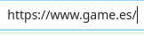
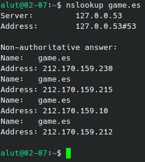
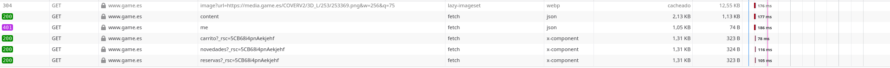
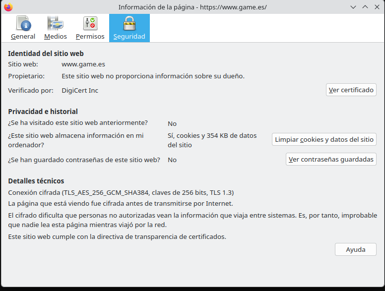
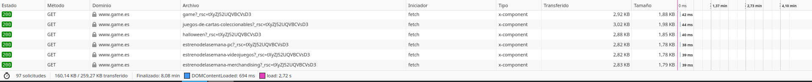

La web que he elegido
He elegido Game porque es una de las páginas web que mas uso y me interesa como funciona por dentro.
Glosario
| Término | Definición con mis palabras | Ejemplo en mi web |
|---|---|---|
| Cliente | Dispositivo o aplicación web que envía solicitudes a un servidor | Desde la perspectiva del comprador, vemos los productos y reabajas de estos mismos, y mas. |
| Servidor | Dispositivo o aplicación que responde a las solicitudes de los clientes | El dispositivo que maneja los stocks de los productos, los pagos de los clientes y otras operaciones. |
| Servidor web | Sistema que procesa las solicitudes HTTP y envía respuestas al cliente | Actualiza los datos de los productos y los precios, como rebajas o liquidaciones |
| Apache | Software de servidor web de código abierto que procesa las solicitudes HTTP y envía respuestas al cliente | Posible software o similar que usa Game para poder servir contenido |
| URL | La dirección completa y única que tiene un recurso en la web | https://www.game.es/buscar/ps5 |
| Protocolo | Reglas formalizadas para la comunicación entre dispositivos en una red | Reglas que permiten al PC comunicarse con Game |
| Dominio | La parte de la URL que identifica el nombre del servidor | www.game.es |
| Ruta | La parte de la URL que identifica la ubicación del recurso | /buscar/ps5 |
| Dirección IP | La dirección única que identifica un dispositivo en una red | La IP pública que usa Game para su web [192.xxx.xx.x] |
| DNS | Sistema que traduce nombres de dominio en direcciones IP | El sistema que permite acceder a la web de Game mediante su nombre de dominio |
| HTTP | Versión del protocolo de comunicación que se utiliza para la transferencia de datos en la web | La versión no segura de Game (actualmente se redirige automaticamente a la HTTPS) |
| HTTPS | Versión segura del protocolo de comunicación que se utiliza para la transferencia de datos en la web | La versión segura de Game |
| Puerto | Endpoint numérico que identifica un servicio específico en una dirección IP | Puerto 433 |
| Petición | La solicitud que un cliente envía a un servidor para obtener un recurso | Hacer "click" en añadir al carrito o en reservar |
| Respuesta | La información que un servidor envía al cliente en respuesta a una petición | La página web de confirmación que se muestra después de hacer clic en reservar |
| Código de estado | Número que indica el resultado de una petición HTTP | 200 OK si la web enseña el contenido, 404 Not Found si no se encuentra el recurso |
| Web estática | Sitio web que muestra contenido fijo y no cambia dinámicamente | El aviso legal de la web |
| Web dinámica | Sitio web que muestra contenido que puede cambiar dinámicamente | El carrito de compras de la web |
| PHP | Lenguaje de programación server-side | El lenguaje que se usa para los filtros de búsqueda |
| Base de datos | Sistema de gestión de información que permite almacenar y recuperar datos de forma estructurada | El almacenamiento digital de Game, donde guarda la información de los carritos, los puntos de socio, usuarios registrados, etc |
| LAMP | Conjunto de tecnologías server-side para el desarrollo de aplicaciones web | La posible infraestructura que tiene alojada Game para su web |
| JSON | Formato de intercambio de datos ligero | El número de productos disponibles en stock |
| XML | Formato de intercambio de datos extensible | El archivo xml que tiene Game para que Google pueda enseñar sus productos directamente sin tener que entrar a la pagina web (tambien aparecen en el apartado de "Productos") |
Evidencias




